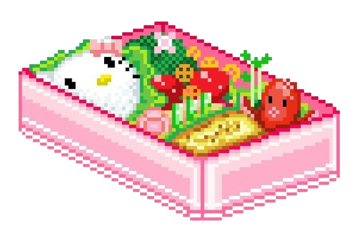
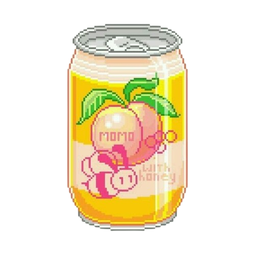
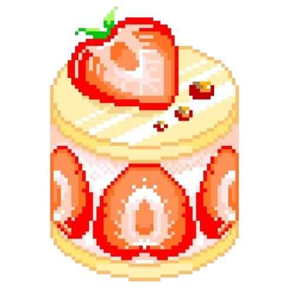
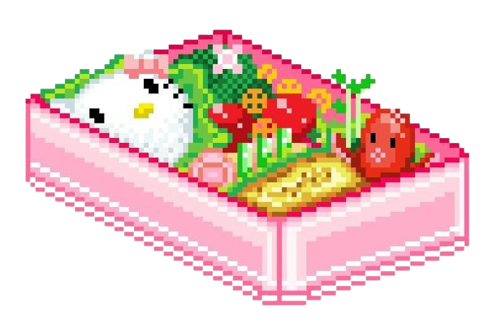
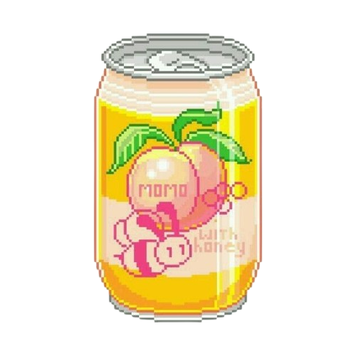
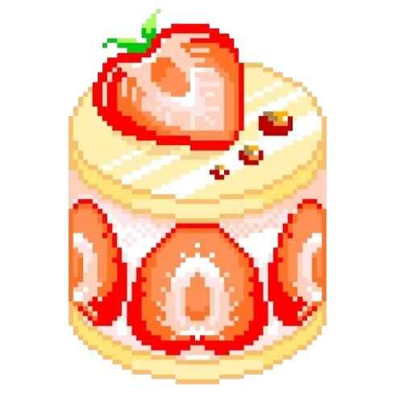
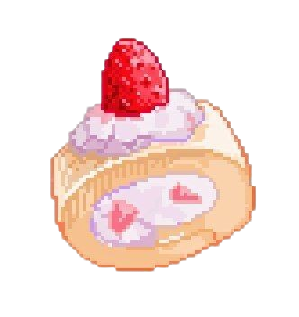
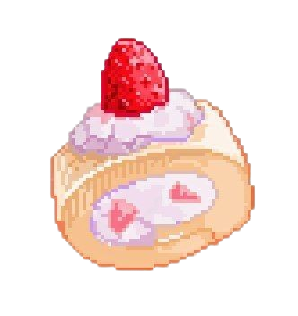

Hi! I'm Alicia
~ Why I Made This Website ~
I’ve always had a soft spot for the old internet era — you know, like super personal kind ✩₊˚ That vibe where everything feels like a cozy digital diary<3
So I made this site as my own little corner of the web (๑˃ᴗ˂)ﻭ A place where I can be creative, decorate freely, and just have fun with coding and design ♡
If you wanna connect or just say hi, feel free to check out my accounts below~ let’s be mutuals (づ｡≧ᵕ≦｡)づ ♡
~ My Background ~
Hii (｡•́‿•̀｡)♡ I’m currently a 5th semester student at BINUS University. This summer, I joined a small internship where I got to learn lots of new things — especially about ERPNext! I worked on doctypes, print formats, and explored how the system works behind the scenes.
Since my major is Information Systems, and I chose the ERP stream. Most of the stuff I learned felt pretty relevant… but what really pulled me in was when I got to use HTML and CSS to customize things. That’s when I started getting curious about web design~ ✧ Now, I’d say I’m both a curator and a developer — I love building websites, but also really enjoy picking and arranging content so everything feels nice and put-together ♡
Most of the time I finished my tasks pretty fast (my supervisor even teased me about it hehe), so during quiet hours, I started working on something just for fun — this little website!
.png)
.png) 





.png) 
